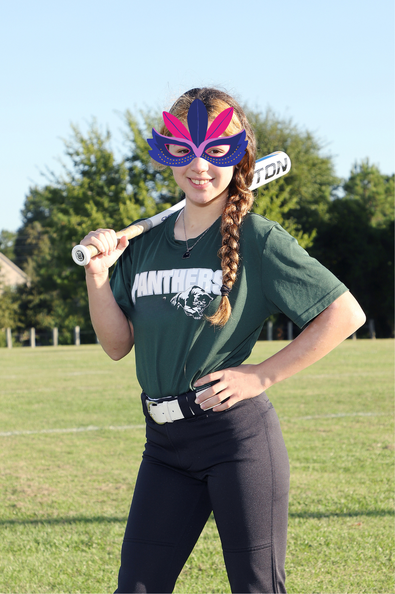

Ilene was born in Houston. She is the oldest of two children. She has three dogs: two Frenchies who are brothers they just turned one,
and an Airedale terrier who is six years old. Ilene has lived the majority of her life in Houston. Her early childhood
years were spent in Corpus Christi. This is where she found her aspiration to grow up and become a zoologist one day.
Visiting the Texas State Aquarium opened her eyes to how much she loved animals and how she could help them.
Biography
Aside from aspiring to be a Zoologist one day, Ilene hopes she is able to do her studies needed for this profession somewhere where she can continue to be a softball pitcher.
When Ilene is not at school or doing homework, you can find her at softball practice with her team or at her softball
lessons. When her team does not have practice, or she does not have a lesson,
you can find her outside practicing pitching with her dad. Ilene is currently the starting pitcher for her team.
For days that do not require schoolwork or softball, Ilene loves to unwind by gaming. She enjoys both console and
PC gaming. Her favorite video game is Animal Crossing. Ilene would say that when she is not playing Animal Crossing,
her second favorite game to play online with friends is Fortnite.
She enjoys that Fortnite allows her to not just game with her friends but also that they get to hang out virtually.
Another thing Ilene enjoys doing with her family is to travel. Whether it is at a state park in the
family RV or visiting family in Mexico, Ilene enjoys the break away from home.